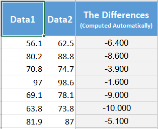
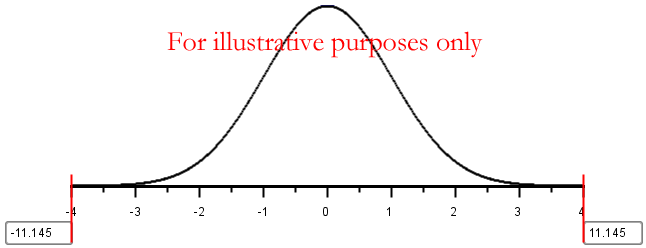
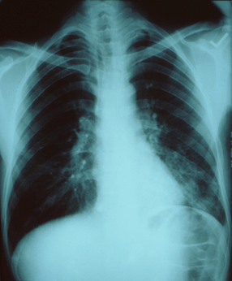
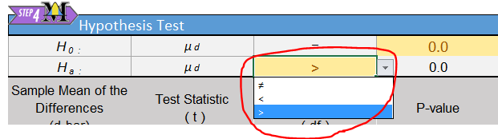

Lesson 12: Inference for Two Means: Paired Data
Example of Paired Data: Pre- and Post-test Scores
In education, it is very common for researchers to conduct studies in which they administer a pre-test, provide some instruction, and then give a post-test. The difference between the post- and pre-test scores is a measure of the student’s progress. In this case, it would not make much sense to only look at the mean score on the pre-test and compare it to the mean score on the post-test.
This is called a matched-pairs design or we say we have dependent samples. Matched-pairs (or paired-data) designs typically involve only one population, and a pair of observations is drawn on the individuals selected for the sample. In the context of the educational study, the two observations are student’s scores on (1) the pre-test and (2) the post-test. If a student is selected to participate in the pre-test (i.e., they are selected to be part of group 1), they are automatically selected to participate in the post-test (i.e., they are chosen to be in group 2 automatically.)
There is a lot of merit in subtracting the individual scores and looking at the mean gain. The researchers are not really interested in the students knowledge before the instruction. This is used as a baseline to measure how much was gained during the instruction. There is great value in looking at the difference. This removes the effect of the individual students’ ability, and it measures their learning during the unit.
To analyze the data, the researchers first find the difference in the post- and pre-test scores. At that point, the data have been reduced to a list of numbers (representing the increase in scores). Now, the researchers can conduct inference on the mean of these values. In other words, they can do a hypothesis test for the mean of the difference in the post- and pre-test scores.
A hypothesis test for two means with paired data (dependent samples) is conducted in the same way as a hypothesis test for a single mean with \(\sigma\) unknown. The only exception is that the pairs of data must be subtracted before you start any computations. From a practical perspective, after you subtract, then you apply the one-sample procedures you have already learned. So, there is nothing new that you need to learn to compute a confidence interval for two means with paired data; just that we will be using a different sheet in the Math221 Statistics Toolbox that automatically calculates the differences.
We will first explore an application of pre- and post-testing in a weight loss study.
Hypothesis Tests

Mahon’s Weight Loss Study
Background
Annie Mahon and other researchers in Wayne Campbell’s nutrition lab studied the weight loss of \(n=27\) middle aged women who consumed a prescribed low-calorie diet. The women’s weights were recorded (in kilograms) at the beginning of the study and after the nine-week diet period. The data are given in the file Mahon.xlsx. An excerpt of the data is given below.
|
Subject |
Pre |
Post |
|---|---|---|
|
1 |
62.5 |
56.1 |
|
2 |
88.8 |
80.2 |
|
3 |
74.7 |
70.8 |
|
\(\vdots\) |
\(\vdots\) |
\(\vdots\) |
|
26 |
76.3 |
73.8 |
|
27 |
82.1 |
77.9 |
Notice the structure of the data. The weight of each subject was measured before the study and at the conclusion of the study. Each person provided a pre-study weight and a post-study weight. Stated differently, the pre-study weights and the post-study weights are paired. For each row of data, both of these numbers came from the same person. When we collect two observations of the same measurement on each subject, we call it paired data. Sometimes paired data are called dependent samples.
- The researchers measured the initial weights of the women prior to the study, even though they were not particularly interested in this value. What was the purpose of measuring the pre-study weights?
Computing New Variables in Excel
The researchers are not interested in the weights of the women, they are more interested in the change in the women’s weights. This will give them a measure of the effectiveness of the low-calorie diet. In other words, they are interested in the difference of the weights after the study compared with before: \[\text{Difference} = \text{Post} - \text{Pre}\]
We can calculate the difference for each woman in the study:
|
Subject |
Post |
Pre |
Difference |
|---|---|---|---|
|
1 |
56.1 |
62.5 |
56.1 \(-\) 62.5 = -6.4 |
|
2 |
80.2 |
88.8 |
80.2 \(-\) 88.8 = -8.6 |
|
3 |
70.8 |
74.7 |
70.8 \(-\) 74.7 = -3.9 |
|
\(\vdots\) |
\(\vdots\) |
\(\vdots\) |
\(\vdots\) |
|
26 |
73.8 |
76.3 |
73.8 \(-\) 76.3 = -2.5 |
|
27 |
77.9 |
82.1 |
77.9 \(-\) 82.1 = -4.2 |
Fortunately, the “Paired Data t-test” tab in the Math 221 Statistics Toolbox will automatically compute the differences when you paste in the data. The Toolbox always takes the data in column A - data in column B. Because we want to take Post - Pre, you will need to swap the order of the column when pasting the data into the Math221 Statistics Toolbox. Follow this process:
- Copy the “Pre” column and paste it into column B, labeled “Data2” of the Toolbox.
- Copy the “Post” column and paste it into column A, labeled “Data1” of the Toolbox.
- Notice in column C the differences are automatically calculated.
- A excerpt of how the data looks in the Math221 Statistics Toolbox is shown below:

- Following the directions above, compute the difference in the women’s weights by pasting the data in the Math221 Statistics Toolbox.
- What is the mean of the values in the Difference column? (Look in cell J7)
- Interpret the value you calculated in Question 3.
Relationship to a One Sample t-test
After you have subtracted the pre-study weights from the post-study weights, you are left with a column of differences. We will denote the pre-study weights by \(x_1\) and the post-study weights by \(x_2\). Then, the differences can be denoted as \(d = x_2 - x_1\). The difference, \(d\), is defined as the change in the volunteer’s weight during the study.
After computing the differences, we do not use the data for the individual groups at all. The researchers are not interested in the values of the women’s weights at the beginning of the study or at the end of the study. They are mostly interested in the difference in the weights after the participants complete the study.
After we subtract, we can conduct a hypothesis test to determine if the mean of the differences is less than zero. We use the symbol \(\mu_d\) to represent the true mean difference in the weights of the women who follow the diet prescribed in this study. The null hypotheses is that the true mean difference is zero (\(\mu_d = 0\)). The alternative hypothesis is that there is a decrease in the weights, in other words, that the true mean difference is less than zero (\(\mu_d < 0\)).
Notice that this is essentially a one-sample t-test where the data are the differences in the women’s weights. We have one column of data, the differences. We are testing whether the true mean difference is less than zero. After subtracting, a test for a difference of two means with paired data is just like a test for one mean with \(\sigma\) unknown.
In the hypothesis test, we will refer to the variable representing the differences as \(d\). We will use this notation throughout the hypothesis test. For example, the true population mean will be labeled \(\mu_d\) and the sample mean will be labeled \(\bar d\). The sample standard deviation of the differences is denoted \(s_d\).
Hypothesis Test for Mahon’s Weight Loss Data

Summarize the relevant background information
Twenty-seven women participated in a nine week weight loss study. During the study period, the participants were provided a reduced calorie diet. Their weights were recorded at the beginning of the study and nine weeks later. The difference of the weights is defined as the post-study weights minus the pre-study weights. The researchers expected that the mean difference in the weights would be negative–in other words, that the women would tend to lose weight.
State the null and alternative hypotheses and the level of significance
\[ \begin{align} H_0: &~~ \mu_d=0 \\ H_a: &~~ \mu_d < 0 \end{align} \]
We will use the \(\alpha = 0.05\) level of significance.

Describe the data collection procedures
The women’s weights were recorded at the beginning of the study. The women were provided a reduced calorie diet for nine weeks. Then, their weights were measured again at the end of the study. A calibrated scale was used to provide an accurate weight.

Give the relevant summary statistics
Here is the Excel output:

From the Excel output illustrated above, we can see a histogram of the data and get the following numerical summaries:
\[ \begin{align} \bar d &= -6.80 \\ s_d &= 3.17 \\ n &= 27 \end{align} \]
The mean and standard deviation are rounded to one decimal place more than the original data.

Verify the requirements have been met
Like the one-sample t-test, this procedure is robust, meaning that it is not very sensitive to the requirements. If they are violated, it will probably still give reasonably good results.
The requirements for this procedure are the same as the requirements for a one-sample t-test:
- the data represent a simple random sample from the population
- the mean of the differences follows a normal distribution
The subjects were recruited via advertisements for a research study. The participants volunteered to participate. It is not a simple random sample of all middle-aged women, but there is nothing about the selection of the sample that would invalidate the results.
From a practical perspective, it is impossible to get a simple random sample of people in the general population. When research trials are conducted, people must volunteer to participate. This can lead to a selection bias, but it is usually negligible.
The requirement of normality is satisfied for Mahon’s data. The differences appear to follow a normal distribution, so \(\bar d\) will be approximately normal.
The sample size (n=27) is fairly large. The histogram shows a mound shape. By scrolling to the right in the Excel sheet you can see a Q-Q plot of the differences:
With this Q-Q plot, we could conclude that the data follow a normal distribution. Even with a small sample size, we can still conduct this test.
Give the test statistic and its value
The test statistic for a test involving paired data when \(\sigma\) is unknown is a \(t\). For this situation, the value is: \[t= \frac{-6.8 - 0}{3.17/\sqrt{27}} =-11.145\] See that this calculation matches the test statistic given in the Excel output. The degrees of freedom and p-value can also be found in the Excel output.
State the degrees of freedom
\[df = 26\]
Mark the test statistic and \(P\)-value on a graph of the sampling distribution
The test statistic and p-value can be found in the Excel output. The following calculations show conceptually how the p-value is calculated:
The test statistic, \(t\), is labeled on the horizontal axis. The \(P\)-value is the area to the left of \(t\) under the curve. This area is so small, it is hiding out on the edges (not actuall visible) on this plot.

It is important to note that only the left tail is shaded, even though we cannot see it in this illustration.
Find the \(P\)-value and compare it to the level of significance
\[ P\text{-value} = 1.06 \times 10^{-11} < 0.05 = \alpha \]
State your decision
Since the \(P\)-value is less than the level of significance, we reject the null hypothesis.

Present your conclusion in an English sentence, relating the result to the context of the problem
There is sufficient evidence to suggest that the reduced calorie diet used in this study results in weight loss for middle-aged women.
Nosocomial Infections
Summarize the relevant background information
Matched-pairs designs are not just used in pre- and post-test situations. They are often used in situations where it is not possible to randomly assign subjects to groups (for example, by a coin toss.) Nosocomial (pronounced: NO-suh-KOH-MEE-uhl) infections are infections that occur in hospitals, but are not a result of the original condition. An example of a nosocomial infection is when a heart attack patient develops a staph infection at the site of an IV injection. The infection was not caused by the heart attack, but it was acquired in the hospital. Nosocomial infections are very dangerous and may result in longer recovery times or increased death rates.

Health care providers suspect that nosocomial infections increase the amount of time required to recover from an illness or injury. In controlled experiments, subjects (e.g., patients) are randomly assigned to treatments. However, it is not ethical to give patients a nosocomial infection in order to determine if it increases the duration of their hospital stay! At best, we can collect information on the duration of hospital stays for patients who acquire nosocomial infections and compare them to the duration of the stays for patients who do not.
There are many factors that affect the amount of time that a patient will need to stay in the hospital, including: nature of illness, types of procedures conducted, overall health, gender, age, etc. How can health care practitioners assess the effect of a nosocomial infection in the presence of so many other variables?
One way is to match a patient who develops a nosocomial infection with another one who has similar characteristics (illness, procedures, health, gender, age group, etc.) but does not develop a nosocomial infection. Now, the patients are matched into pairs with similar characteristics, where the principle difference between the members of each pair is whether or not they acquired a nosocomial infection.
By pairing the patients according to specific characteristics, the researchers can now subtract to observe a difference in their recovery times. In this way, it is possible to assess if nosocomial infections increase the mean duration of a hospital stay. Some researchers conducted such a study in which 52 pairs of patients were matched based on clinical characteristics. A patient with a nosocomial infection was matched as closely as possible to a similar case where there was no nosocomial infection. Patients who died were excluded from the study . The lengths of the hospital stays (in days) for these patients are given in the file NosocomialInfections.xlsx.
The difference, \(d\), is defined as the duration of the hospital stay of the individual in the pair with the nosocomial infection minus the duration of the stay for the individual who did not get a nosocomial infection: \[ Difference=Infected - NotInfected \] After computing the differences, we do not use the data for the individual groups at all. In fact, after we subtract, the hypothesis test is conducted (essentially) like a one-sample test for a single mean with \(\sigma\) unknown.
In order to get the correct \(P\)-value, we need to indicate the proper alternative hypothesis in Excel. In cell Q6 be sure the “Greater Than” symbol is selected in the drop-down menu.

- Give the relevant summary statistics
- Make an appropriate graph to illustrate the data

- Verify the requirements have been met
- Give the test statistic and its value
- State the degrees of freedom
- Mark the test statistic and \(P\)-value on a graph of the sampling distribution
- Find the \(P\)-value and compare it to the level of significance
- State your decision
- Present your conclusion in an English sentence, relating the result to the context of the problem
Additional Worked Examples
Viewing additional examples can help your understanding. Click on the link below to see two more examples of hypothesis tests.
Show/Hide Additional Examples


Confidence Intervals
We can compute a confidence interval for the true mean of the differences for paired data. After the differences between two paired data sets have been calculated, we can create a confidence interval for the true mean of the differences. To do this, we follow the instructions for creating a confidence interval for a one mean with \(\sigma\) unknown, but we use the column of differences as the data set.
To calculate confidence intervals for the true mean of the difference in Excel, do the following:
- Open the file Math 221 Statistics Toolbox
- Click on the tab labeled “One-sample t-test”
- Enter the columns of paired data into column A and B
- Set the desired confidence level.
The requirements for creating a confidence interval for the difference of means are the same as the requirements for the hypothesis test. We assume:
- A simple random sample was drawn from the population
- The mean of the differences is normally distributed

Mountain Pine Beetle Attacks
Summarize the relevant background information
Mountain pine beetles are small insects that bore into the bark of trees. The female beetles that first infest the tree emit pheromones to attract other beetles. In response to the pheromones, many beetles bore into the tree and ultimately kill it. The insects can destroy large tree stands within one year.
Lodgepole pine (Pinus contorta Dougl.ex Loud.) are particularly susceptible to mountain pine beetle (Dendroctonus ponderosae Hopkins) outbreaks. The image above shows the destruction that can be caused by these insects. The large brown patches are pines that have been killed by the beetles.
- The mountain pine beetle threatens many forests in the United States. These tiny insects are only 0.5 cm long–about the size of a grain of rice. This photo of a mountain pine beetle is magnified greatly. These little creatures can destroy a large, healthy forest. Can you think of a spiritual parallel?
Describe the data collection procedures
In a study conducted in the Arapaho National Forest in Colorado, researchers from the USDA Forest Service studied the effect of pine beetle outbreaks on the average number of trees in an area. The researchers counted the number of established trees per hectare before a pine beetle outbreak and seven years after an outbreak. (One hectare is an area of 100 meters by 100 meters.) Data representative of their observations are given in the file PineBeetle.xlsx.
Give the relevant summary statistics
- Find the mean and standard deviation of the number of trees per hectare before the pine beetle outbreak. How would you describe the density of the trees in this forest? Express this in terms that make sense to you.
- Repeat question 38 for the number of trees per hectare after the outbreak.
- Find the differences by subtracting the “before” counts from the “after” counts:
\[Difference = After - Before\] You will need to change the order of the columns so that “after” is in column A, and “before” is in column B in the Math221 Statistics Toolbox. The differences are located in column C.
- For these differences, report the mean, the standard deviation, and the sample size.
Make an appropriate graph to illustrate the data
- Create a histogram of the differences in the density of the trees.
- Verify the requirements have been met.
- Find the confidence interval. Use the 95% level of confidence.
Present your observations in an English sentence, relating the result to the context of the problem
Interpret the confidence interval we created. We are 95% confident that the true mean change in the number of trees per hectare after a pine beetle outbreak is between \(-438.121\) and \(-432.948\) trees per hectare. Stated differently, we are 95% confident that the true mean decrease in the number of trees per hectare after a pine beetle outbreak is between \(432.948\) and \(438.121\) trees per hectare.
Sleep Inducing Drugs
Summarize the relevant background information
In William Sealy Gosset’s landmark paper on the \(t\)-distribution, he cites data on a sleep-inducing drug. In a paper published in 1905, Arthur R. Cushny and A. Roy Peebles reported the effect of Laevorotatory Hyoscyamine Hydrobromate (L-Hyoscyamine) on the length of time that people sleep before waking. The primary research question is: does L-Hyoscyamine impact the mean amount of time that people sleep? We will compute a 90% confidence for the true mean difference in the times.
Describe the data collection procedures
Eleven subjects were included in the study. At the start of the study, the researchers observed the average length of time that each of the participants slept before waking. Later, each subject was given 0.6 mg of L-Hyoscyamine and the duration of uninterrupted sleep was again measured.
The difference in the amount of time each person slept was computed by subtracting the amount of time the subjects slept when taking the drug minus the sleep duration with no drug. The data are summarized in the table below.
| Subject | Control (no drug) | L-Hyoscyamine | Difference |
|---|---|---|---|
| 1 | 0.6 | 1.3 | 0.7 |
| 2 | 3 | 1.4 | -1.6 |
| 3 | 4.7 | 4.5 | -0.2 |
| 4 | 5.5 | 4.3 | -1.2 |
| 5 | 6.2 | 6.1 | -0.1 |
| 6 | 3.2 | 6.6 | 3.4 |
| 7 | 2.5 | 6.2 | 3.7 |
| 8 | 2.8 | 3.6 | 0.8 |
| 9 | 1.1 | 1.1 | 0 |
| 10 | 2.9 | 4.9 | 2 |
| 11 | - | 6.3 | - |
Notice that the “control” data for Subject #11 is missing. It is not possible to compute a difference for this person, so their data will be omitted from our analysis. For this analysis, we will use the remaining \(n=10\) observations.
You may find it easier to copy and paste the data from the following table. The last row has been omitted.
| Increase in hours of sleep |
|---|
| 0.7 |
| -1.6 |
| -0.2 |
| -1.2 |
| -0.1 |
| 3.4 |
| 3.7 |
| 0.8 |
| 0 |
| 2 |
Give the relevant summary statistics
- Report the mean, standard deviation, and sample size for the differences.
Make an appropriate graph to illustrate the data
- Create a histogram of the differences in the hours of sleep.
- Verify the requirements have been met.
- Find the confidence interval. Use the 90% level of confidence.
- Present your observations in an English sentence, relating the result to the context of the problem
Summary
The key characteristic of dependent samples (or matched pairs) is that knowing which subjects will be in group 1 determines which subjects will be in group 2.
We use slightly different variables when conducting inference using dependent samples:
Group 1 values: \(x_1\) Group 2 values: \(x_2\) Differences: \(d\) Population mean: \(\mu_d\) Sample mean: \(\bar d\) Sample standard deviation: \(s_d\)
- When conducting hypothesis tests using dependent samples, the null hypothesis is always \(\mu_d=0\), indicating that there is no change between the first population and the second population. The alternative hypothesis can be left-tailed (\(<\)), right-tailed(\(>\)), or two-tailed(\(\ne\)).
Copyright © 2017 Brigham Young University-Idaho. All rights reserved.